The Impact of the War
Resource consumption and loss : War requires a large amount of financial and material investment and consumes national economic resources. Infrastructure (such as roads, factories, schools) was destroyed and economic activity ground to a halt. 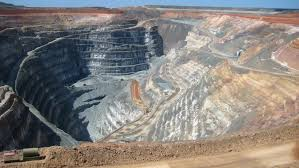
Inflation and debt growth : War can trigger skyrocketing prices because supply chains for resources are cut off. At the same time, governments will borrow money or print money to pay for military spending, further destabilizing the economy. 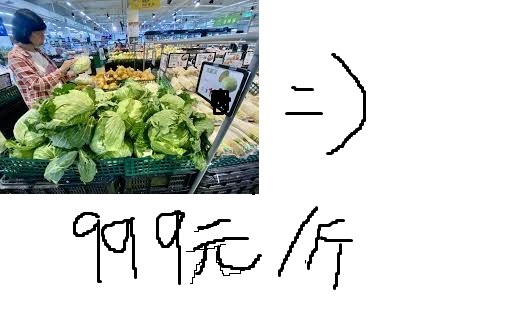
Industrial structure transformation : Production shifts from civilian to military needs (such as weapons production). The post-war reconstruction process may bring new investments and technological advances. 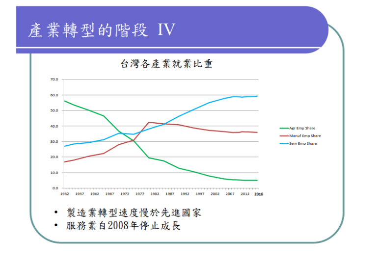
international trade blocked : Trade routes are disrupted and imports and exports are restricted, which has a significant impact on the economies of countries that rely on imports. 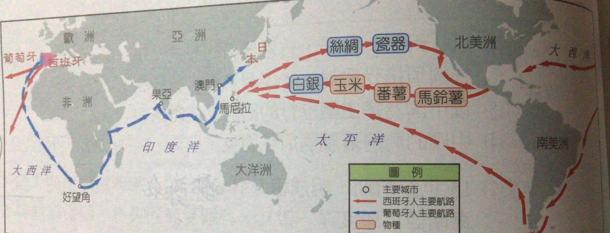
Natural resource destruction : War destroys forests, farmland, and water resources, causing imbalances in ecosystems. For example, large-scale artillery fire can destroy agricultural soil.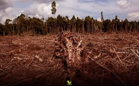
Pollution Problems : The use of chemical weapons or bombs releases toxic substances that contaminate the air, water and soil. Nuclear weapon explosions can also cause radioactive contamination that can last for decades.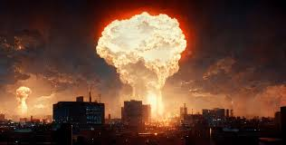
Reduced biodiversity : War destroys wildlife habitats, causing many species to become extinct or endangered. 
Increasing climate change : War activities (such as explosions and combustion) release large amounts of greenhouse gases, further affecting the global climate. 
Population mobility and refugee issues : Many civilians fled their homes due to the war and became refugees. This not only poses challenges to the country's social stability, but also increases pressure from neighboring countries and the world. 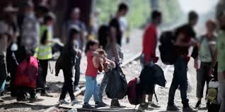
infrastructure damage : Public facilities such as education and medical care were destroyed, and social services were stopped, resulting in a decline in the quality of life.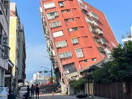
Culture and tradition impact : War can destroy cultural heritage, change social values, and even cause some cultural traditions to disappear.
class and gender inequality : War is often accompanied by a widening gap between rich and poor, with women and children often being disproportionately harmed by conflicts. 
Post Traumatic Stress Disorder (PTSD) : Soldiers and civilians fighting in combat can face ongoing psychological trauma that can lead to anxiety, depression and nightmares. 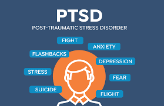
Collective psychological trauma : The entire society may face collective trauma phenomena such as the collapse of trust and rising hostility.
Broken family structure : The loss of a loved one or the unstable mental state after a soldier returns leads to the breakdown of family relationships.
Generational impact : The psychological impact of war may continue to the next generation. For example, children who grow up in a war-torn environment may lack security and psychological stability.
This Year : The total of Fatalities this year is about 154,000 people , most of the Fatalities were from Ukraine and Russia conflict and Sudanese Civil War. 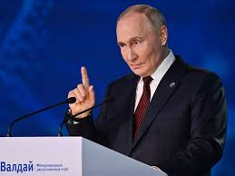
In 10 Years : The total of Fatalities in 10 years is over a million most of the Fatalities is from : Syrian civil war , Yemen conflict , Tigray conflict in Ethiopia , afghan war. 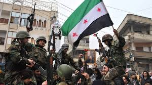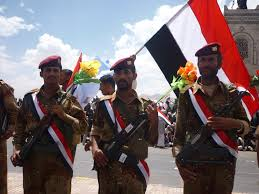
How many percent of Russians/Ukrainians under 40 died in the Russia-Ukraine war?Approximately 70-80% of Russian soldiers and 65-75% of Ukrainian soldiers who died in the Russia-Ukraine war were under 40 years old.
Technology development acceleratesWith the increase in high-tech applications such as drones, artificial intelligence (AI), and cyber warfare, future wars may no longer rely on traditional weapons, but instead turn to automation and networked technologies. This may change military strategy and the global security situation.
humanitarian crisisWar has led to refugee flows, hunger and the spread of disease, posing challenges to social stability and humanitarianism.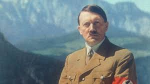